دکتر مسعود گوهری منش
دانشیار گروه مهندسی مکانیک — دانشگاه تربت حیدریه
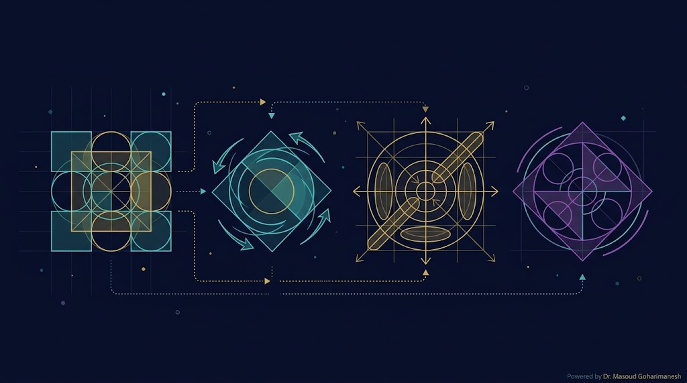
ریاضیات مهندسی پیشرفته — جلسه ۴ (پایان فاز ۱)
دکتر مسعود گوهری منش
دانشیار گروه مهندسی مکانیک — دانشگاه تربت حیدریه
در جلسه ۳ دیدیم که هسته و تصویر با رتبه و پوچی تعریف میشوند. در این جلسه، مقادیر تکین (Singular Values) این تصویر را دقیقتر میکنند: هر مقدار تکین صفر = یک بُعد در هسته.
برای ماتریس $A \in \mathbb{R}^{n \times n}$، بردار غیرصفر $\vec{v}$ و اسکالر $\lambda$ را مقدار ویژه و بردار ویژه مینامیم اگر:
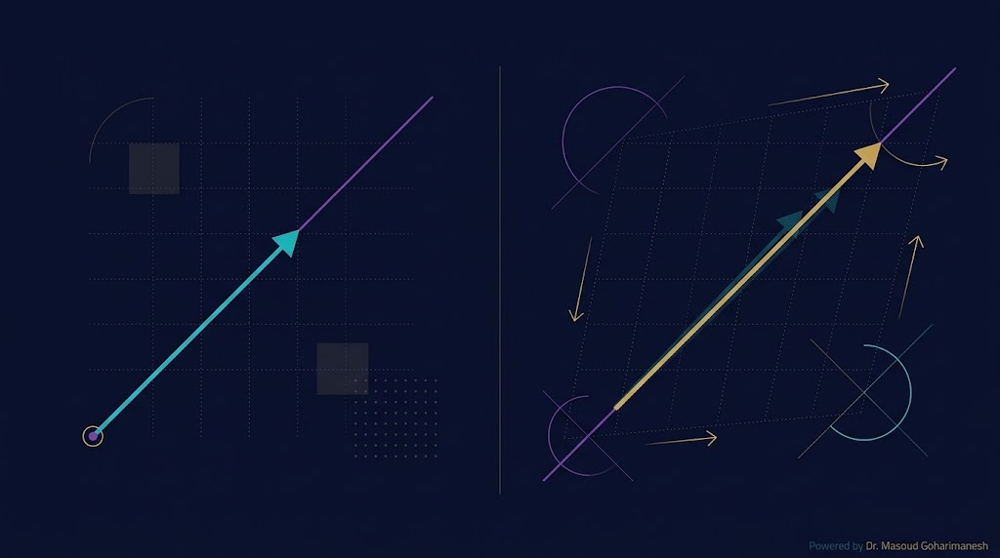
بردار ویژه، برداری است که پس از اعمال $A$، فقط مقیاس میشود و جهتش تغییر نمیکند.
برای ماتریسهای حقیقی، مقادیر ویژه ممکن است مختلط مزدوج باشند (مثلاً ماتریس چرخش).
با بازنویسی $A\vec{v} = \lambda\vec{v}$:
برای جواب غیربدیهی ($\vec{v} \neq \vec{0}$)، ماتریس $A - \lambda I$ باید تکین باشد:
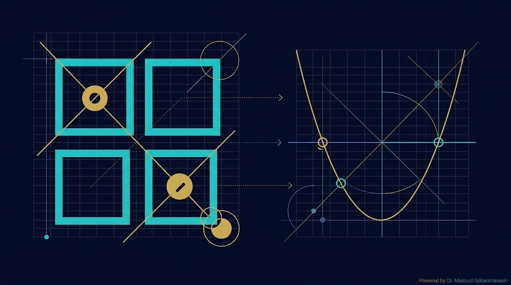
ماتریس را تغییر دهید و بردارهای ویژه را ببینید.
اگر ماتریس $A$ دارای $n$ بردار ویژه مستقل خطی باشد، میتوان آن را قطری کرد:
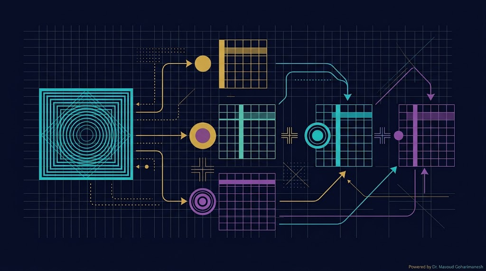
مقادیر ویژه روی قطر اصلی.
ستونها = بردارهای ویژه.
اگر $A$ متقارن باشد ($A = A^T$)، آنگاه:
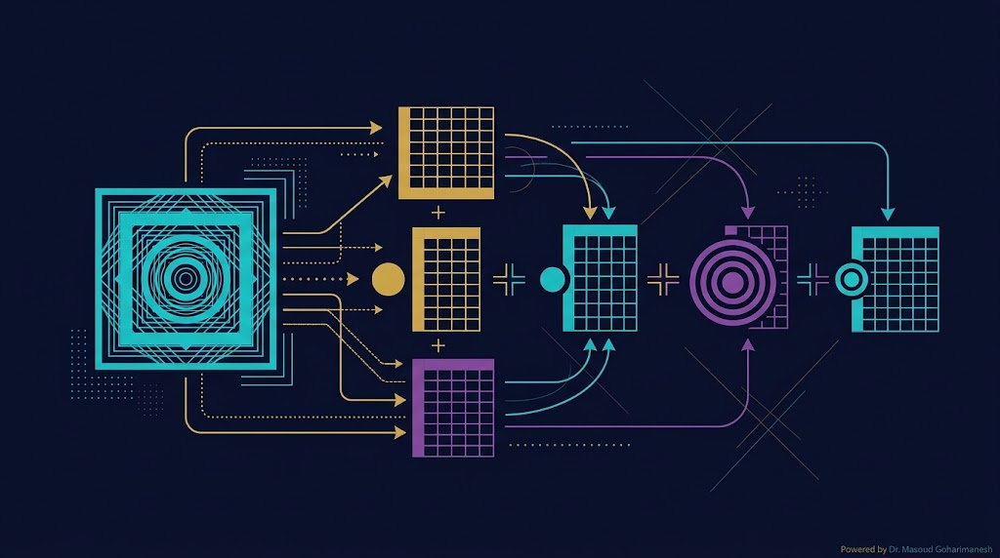
نتیجه تجزیه $A = P D P^{-1}$ را بهصورت زنده ببینید.
SVD (Singular Value Decomposition — تجزیه مقدار تکین) برای هر ماتریس (مربعی یا مستطیلی) قابل اعمال است:
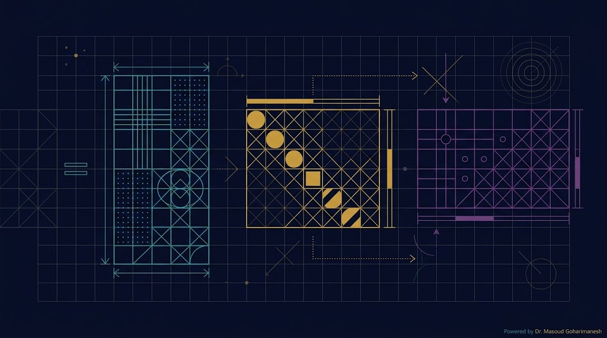
متعامد
بردارهای تکین چپ
قطری
مقادیر تکین
متعامد
بردارهای تکین راست
هر ماتریس $A$ را میتوان به سه مرحله ساده تجزیه کرد:
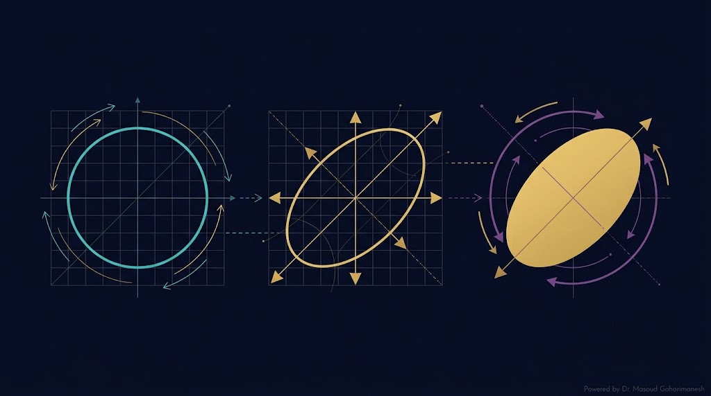
با $V^T$
با $\Sigma$
با $U$
سه مرحله SVD را با ماتریس دلخواه ببینید.
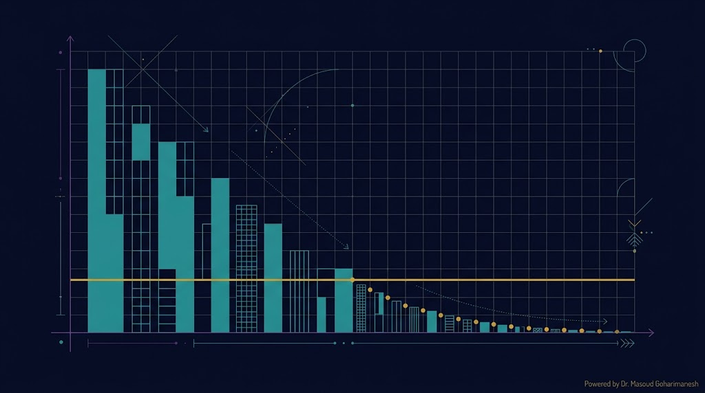
تعداد مقادیر تکین بزرگتر از آستانه $\varepsilon$ = رتبه ماتریس.
همه $\sigma_i$ بزرگ → cond کوچک → رتبه = min(m,n)
بعضی $\sigma_i$ نزدیک صفر → cond بزرگ → رتبه کاهشیافته
با نگهداشتن فقط $k$ مقدار تکین بزرگ، تقریب کمرتبه میسازیم:
$A_k$ بهترین تقریب کمرتبه ماتریس $A$ است:
شبهمعکوس Moore-Penrose را میتوان از SVD محاسبه کرد:
که در آن $\Sigma^+$ با معکوس کردن مقادیر تکین غیرصفر و ترانهاده به دست میآید.
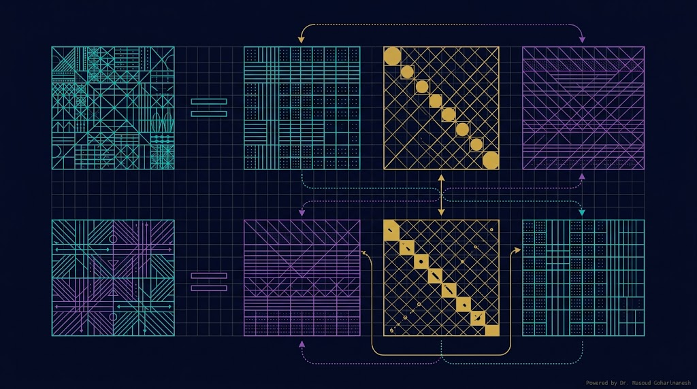
شبهمعکوس از SVD، پایدارترین روش محاسبه است. با صفر کردن مقادیر تکین کوچک، از تقویت نویز جلوگیری میشود.
برای سیستم بیشتعیین $A\vec{x} = \vec{b}$، جواب کمترین مربعات:
A = [1 2; 3 4; 5 6]; b = [1; 2; 3]; % روش ۱: pinv x1 = pinv(A) * b; % روش ۲: backslash x2 = A \ b; % روش ۳: با SVD [U, S, V] = svd(A); S_pinv = diag(1./diag(S)); Ap = V * S_pinv * U'; x3 = Ap * b;
import numpy as np A = np.array([[1,2],[3,4],[5,6]]) b = np.array([1, 2, 3]) # روش ۱: pinv x1 = np.linalg.pinv(A) @ b # روش ۲: lstsq x2, _, _, _ = np.linalg.lstsq(A, b, rcond=None) # روش ۳: با SVD U, S, Vt = np.linalg.svd(A) S_pinv = np.diag(1/S) Ap = Vt.T @ S_pinv @ U.T x3 = Ap @ b
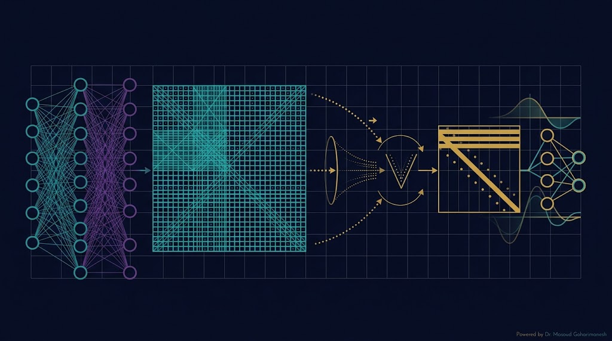
ماتریس وزن $W \in \mathbb{R}^{m \times n}$ شبکه عصبی را میتوان با SVD به رتبه پایینتر کاهش داد:
کاهش پارامترها از $m \cdot n$ به $k(m+n)$ — برای $k \ll \min(m,n)$ صرفهجویی عظیم.
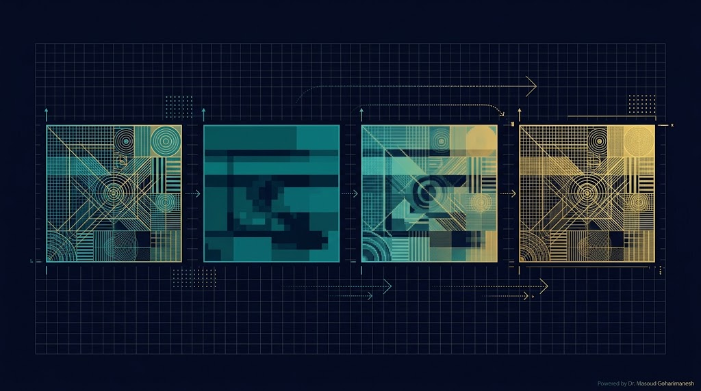
تصویر $m \times n$ → SVD → نگهداشتن $k$ مقدار تکین بزرگ.
با تغییر k، اثر فشردهسازی تصویر را ببینید.
تصویر اصلی
تصویر فشرده (k=۱۰)
برای سیستم جرم-فنر با $n$ درجه آزادی، معادله حرکت:
با فرض $\vec{x} = \vec{v} e^{i\omega t}$:
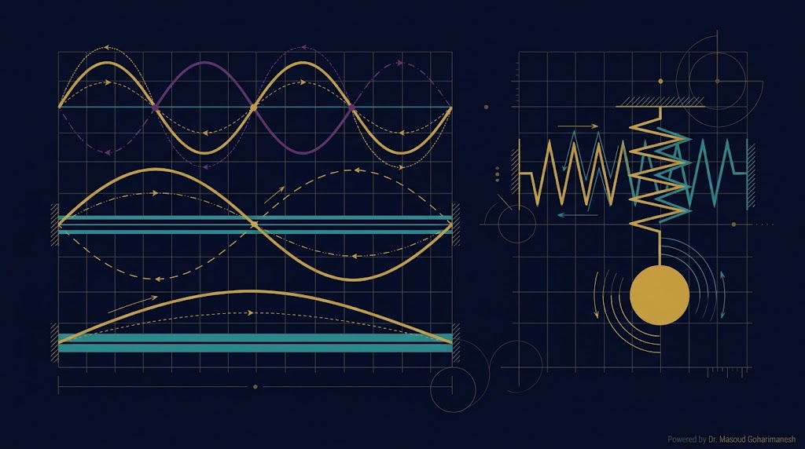
$\omega_i^2$ = مقادیر ویژه، $\vec{v}_i$ = شکل مودها. SVD و eig ابزار اصلی تحلیل ارتعاشات.
% === مقدار و بردار ویژه === A = [2 1; 1 2]; [V, D] = eig(A) eigVals = diag(D) % === SVD === [U, S, V] = svd(A) sigma = diag(S) % === رتبه با SVD === tol = max(size(A)) * eps(max(sigma)); rank_A = sum(sigma > tol) % === شبهمعکوس === Ap = pinv(A) % === کاهش رتبه === k = 1; Ak = U(:, 1:k) * S(1:k, 1:k) * V(:, 1:k)'; % === شرط === c = cond(A) c_svd = sigma(1) / sigma(end)
# === مقدار و بردار ویژه === import numpy as np A = np.array([[2,1],[1,2]]) eigVals, eigVecs = np.linalg.eig(A) print("مقادیر ویژه:", eigVals) print("بردارهای ویژه:", eigVecs) # === SVD === U, S, Vt = np.linalg.svd(A) print("مقادیر تکین:", S) # === رتبه با SVD === tol = max(A.shape) * np.finfo(float).eps * S[0] rank_A = np.sum(S > tol) print("رتبه:", rank_A) # === شبهمعکوس === Ap = np.linalg.pinv(A) # === کاهش رتبه === k = 1 Ak = U[:, :k] @ np.diag(S[:k]) @ Vt[:k, :] # === شرط === c = np.linalg.cond(A) c_svd = S[0] / S[-1]
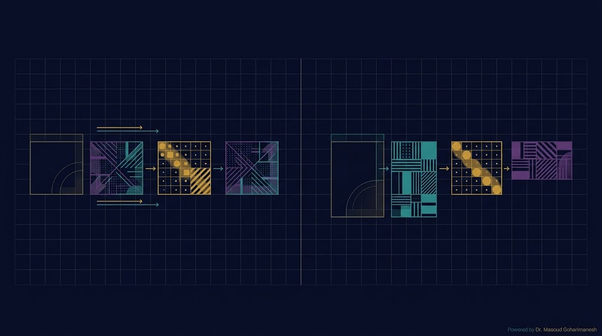
| ویژگی | eig | svd |
|---|---|---|
| ماتریس ورودی | فقط مربعی | هر ماتریس |
| خروجی | مقادیر ویژه | مقادیر تکین ≥ 0 |
| مقادیر مختلط | ممکن | همیشه حقیقی |
| یکتایی | غیریکتا | یکتا (تا ترتیب) |
| پایداری عددی | کمتر | بالاتر |
| کاربرد اصلی | پایداری، ارتعاشات | فشردهسازی، PINN |
ارسال تمرینها:
m.goharimanesh@gmail.com
Subject الزامی:
[Advanced Engineering Mathematics] HW04 - نام و نام خانوادگی - شماره دانشجویی
SVD و شبهمعکوس، ابزار اصلی فشردهسازی پارامترهای PINN و تحلیل دادههای سنسور هستند.
فرکانسهای طبیعی با eig، تحلیل مودها
فشردهسازی وزنها، کاهش بُعد
Perturbation + شبهمعکوس
در گزارش پروژهتان، حتماً تحلیل SVD (مقادیر تکین و کاهش بُعد) را برای دادههای خود گزارش دهید. این کار ارزش علمی مقاله شما را بهشدت بالا میبرد.
$A\vec{v} = \lambda\vec{v}$
$A = PDP^{-1}$
$A = U\Sigma V^T$
Low-rank approximation
$A^+ = V\Sigma^+ U^T$
کاهش پارامترها
با اتمام جلسه ۴، فاز ۱ (مبانی ریاضی) کامل شد. شما اکنون ابزارهای زیر را در اختیار دارید:
جلسه ۵ — دستهبندی و آشنایی با PDE
اگر تمام مقادیر تکین یک ماتریس را داشته باشید، آیا میتوانید مقادیر ویژه آن را هم استخراج کنید؟
🔹 برای ماتریسهای متقارن: بله — مقادیر ویژه = مقادیر تکین (تا علامت)
🔹 برای ماتریسهای غیرمتقارن: خیر — نیاز به محاسبه جداگانه
با زیبایی ریاضیات همراه باشید 🌟
دکتر مسعود گوهری منش
دانشیار گروه مهندسی مکانیک — دانشگاه تربت حیدریه
جلسه بعد: دستهبندی و آشنایی با PDE — آغاز فاز ۲